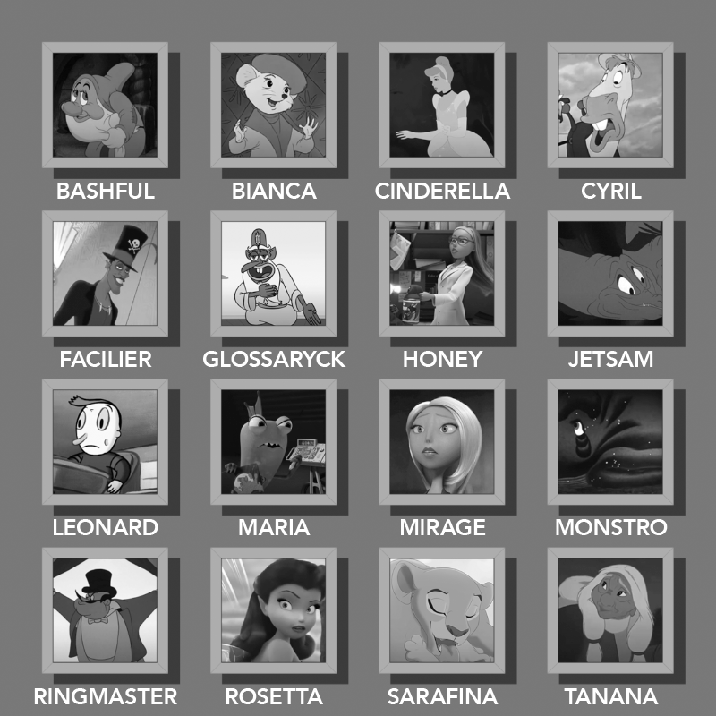

The Disney and Pixar characters in the top half are presented in alphabetical order.
Each real person and thing in the lower half is a transaddition (add a letter and anagram) of each Disney character.
Taking those added letters in the same order used in the bottom half spells out the answer: REPROACHLESSNESS.
| Disney Character | Disney Movie/Show | Added Letter for Transaddition | Real People / Things |
|---|---|---|---|
| CINDERELLA | Cinderella | R | ERIC DARNELL |
| LEONARD Helperman | Teacher's Pet | E | DELOREAN |
| Dr. FACILIER | The Princess and the Frog | P | RICE PILAF |
| HONEY Lemon | Big Hero 6 | R | O. HENRY |
| MONSTRO | Pinocchio | O | NOSTROMO |
| CYRIL Proudbottom | The Wind in the Willows | A | ICARLY |
| MIRAGE | The Incredibles | C | GRIMACE |
| The RINGMASTER | Dumbo | H | RANGER SMITH |
| Miss BIANCA | The Rescuers | L | CALIBAN |
| ROSETTA | Disney Fairies series | E | SEA OTTER |
| BASHFUL | Snow White and the Seven Dwarfs | S | USB FLASH |
| JETSAM | The Little Mermaid | S | ST. JAMES |
| SARAFINA | The Lion King | N | ANNA FARIS |
| Sir GLOSSARYCK of Terms | Star vs. the Forces of Evil | E | ARGYLE SOCKS |
| TANANA | Brother Bear | S | SANTANA |
| MARIA | Monsters at Work | S | ARAMIS |